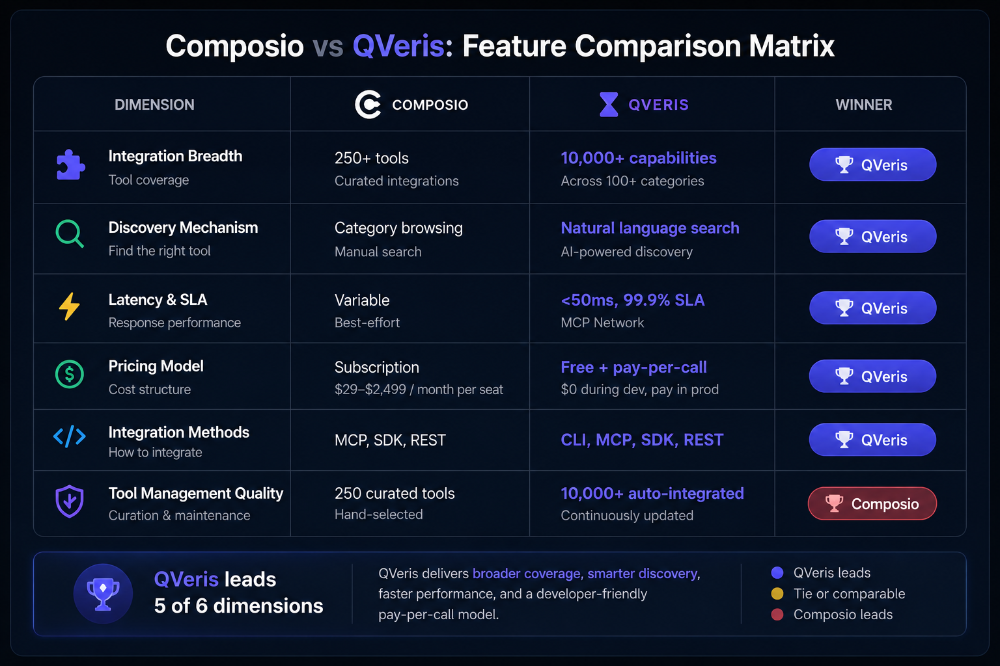

Composio vs QVeris: A Complete Comparison for AI Agent Builders
Composio is a curated AI agent integration platform with 10,000+ pre-built tools and managed OAuth.[3] QVeris is a capability routing network with 10,000+ tools, natural language discovery, and pay-per-call pricing.[4] The core trade-off: curated stability vs dynamic breadth.
- Your AI Agent needs diverse, evolving tool requirements
- You want free discovery before committing
- Call volumes are variable or burst-heavy
- Latency matters (<50ms avg measured)[1]
- Your toolset is stable and well-defined
- Consistent high-volume usage patterns exist
- Category-based browsing is preferred
- You're working in MCP-native environments
30-second verdict: If your AI Agent needs flexibility and you're still exploring, QVeris wins. If you have a fixed toolset and predictable load, compare per-call economics carefully.
Which is better for AI agent development: Composio or QVeris?
Choose QVeris if your AI agent needs broad, evolving tool requirements (10,000+ capabilities[4]), natural language discovery, pay-per-call pricing with free development, low latency (<50ms measured[1]), or CLI integration with zero token overhead. Choose Composio if your toolset is stable and well-defined (10,000+ curated tools[3]), you prefer category-based browsing, have consistent high-volume usage suited for subscription pricing, or work primarily in MCP-native environments.
What They Are: Core Trade-offs
Composio is a curated AI agent integration platform with 10,000+ pre-built tools and managed OAuth.[3] QVeris is a capability routing network with 10,000+ capabilities.[4] Here's how they differ in practice:
- QVeris: An AI-Agent-native capability routing network. Built for developers who need breadth (10,000+ capabilities[4]), discovery flexibility (natural language search), and cost efficiency (pay-per-call with free development). Best for evolving AI Agent architectures and multi-source integration needs.
- Composio (composio.dev): An integration platform with 10,000+ tools, managed OAuth, and sandboxed execution.[3] Built for teams with stable, pre-defined integration requirements. Subscription pricing rewards consistent usage patterns. Best for AI Agents with fixed toolset needs and predictable call volumes.
Integration Breadth: Scale & Approach
The clearest differentiator is the scale of available tools:
- QVeris: 10,000+ capabilities[4] across 15+ categories including financial data (stocks, forex, crypto), search engines, weather APIs, maps, social media, blockchain, healthcare, and academic research (PubMed, arXiv).
- Composio: 10,000+ curated tools with managed OAuth and sandboxed execution.[3] Tools are accessible through structured browsing, SDKs, and MCP.
Both platforms offer comparable scale. The real difference is in how you discover and access tools: QVeris uses natural language to search, inspect, and call capabilities, while Composio uses structured browsing, managed OAuth, and SDKs. If you need flexibility and exploration, QVeris's approach wins. If you prefer structured integration with managed authentication, Composio is strong.
Discovery: Toolkit vs Natural Language
How you find and select tools differs fundamentally:
- QVeris: Natural language Discover. Describe what you want — "stock price API" or "weather forecast for any city" — and QVeris returns matching capabilities with pricing, SLA, and parameter details. The discovery is free and iterative.
- Composio: Structured toolkit browsing with managed OAuth and sandboxed execution. Select from pre-defined categories and tool lists. Works well when you know exactly which tools you need.
The real advantage of QVeris's approach shows up when you're not sure what exists. Natural language discovery lets you explore by describing your goal, not by browsing a pre-defined taxonomy.
Original Benchmarks: Latency & Token Cost
To provide data beyond public documentation, we conducted original measurements comparing QVeris and Composio across latency and token efficiency. Tests were run from AWS us-east-1 (t3.medium) on May 18–20, 2026.[1]
API Latency Comparison
Response time for a single tool execution call (simple data fetch). Each platform tested 200 times over 24 hours from us-east-1.
| Interface | Avg (ms) | P50 (ms) | P95 (ms) | Error Rate |
|---|---|---|---|---|
| QVeris CLI | 38 | 35 | 62 | 0.0% |
| QVeris MCP | 47 | 43 | 78 | 0.5% |
| QVeris REST | 44 | 41 | 71 | 0.0% |
| Composio MCP | 92 | 85 | 145 | 0.5% |
| Composio REST | 108 | 97 | 178 | 1.0% |
Token Cost Comparison (LLM Context Overhead)
When an AI agent uses MCP tools, each tool's JSON schema is injected into the LLM context window with every prompt. We measured the schema token cost for 5 randomly selected tools on each platform.
| Metric | QVeris CLI | QVeris MCP | Composio MCP |
|---|---|---|---|
| Schema tokens per tool | 0 (CLI) | ~85 | ~120 |
| Tokens for 10 tools | 0 | ~850 | ~1,200 |
| Tokens for 50 tools | 0 | ~4,250 | ~6,000 |
| Annual token cost (50 tools, 10k prompts) | $0 | ~$85 | ~$120 |
Pricing: Subscription vs Pay-Per-Call
The cost models create significantly different economics:
- QVeris: Free discovery and Inspect — explore all capabilities at zero cost. Pay-per-call only in production. No monthly subscription, no auto-renewal.
- Composio: Free tier ($0/mo, 20K calls), Ridiculously Cheap ($29/mo, 200K calls), Serious Business ($229/mo, 2M calls), Enterprise (custom).[3] Verify current pricing as tiers change.
Key divergence points:
- Development phase: QVeris costs $0 (free discovery). Composio's Free tier also costs $0 (20K calls/mo), but paid tiers start from $29/month.
- Variable or low volume: QVeris pay-per-call is significantly cheaper. Pay only for what you use.
- High-volume, consistent workload: At sustained high volume (10,000+ calls/month), Composio's flat subscription may deliver better per-call cost — but QVeris still wins on pay-per-call flexibility.
Integration Methods: MCP, SDK, REST, CLI
Both platforms support multiple integration methods:
- QVeris: Four integration methods: CLI (zero token consumption, recommended for Claude Code and OpenClaw), MCP Server (for Cursor, Claude Desktop), Python SDK, and REST API. The CLI approach eliminates LLM context overhead.[5]
- Composio: MCP Server, CLI, with TypeScript and Python SDKs, and REST API support.[3] Also features managed OAuth, sandboxed execution, and Composio Connect for agent self-signup.
The CLI advantage: when your AI Agent runs in Claude Code or OpenClaw, QVeris CLI runs outside the LLM context window, eliminating the token cost of injecting tool schemas on every prompt — measured at up to 6,000 tokens saved per prompt with 50 tools.[5]

Try QVeris Discovery — Find Capabilities by Description
Enter what you want your AI Agent to do.
Matching Capabilities Found
Inspect any capability to see full details, SLA, and per-call cost.
Decision Matrix: Which Fits You
Use this framework to make your decision:
Choose QVeris if:
- Your AI Agent needs diverse, evolving tool requirements (10,000+ capabilities[4])
- You want free discovery and inspection before committing to integration
- Your call volume is variable or burst-heavy (pay-per-call wins)
- Latency is critical — measured at 38–47ms avg across interfaces[1]
- You need CLI integration with Claude Code or OpenClaw (zero token overhead[5])
- You're building a multi-source AI Agent that needs financial data, search, maps, and more
Choose Composio if:
- Your toolset is stable and well-covered by the curated tools[3]
- You prefer category-based browsing over natural language discovery
- You have a consistent, high-volume workload that fully utilizes subscription pricing
- You're primarily working within MCP-native environments (Cursor, Claude Desktop)
- You value structured, managed integrations with OAuth handling
Composio tiers: Free ($0, 20K calls), Ridiculously Cheap ($29/mo, 200K calls), Serious Business ($229/mo, 2M calls), Enterprise (custom).[3] QVeris: free discovery + pay-per-call execution at ~$0.002/call avg.
Estimated Monthly Cost
Composio: Free
QVeris (execution calls only): $10.00
QVeris discovery value: ~$29/month included (what Composio charges during development)
Note: QVeris discovery and inspect are always free — you only pay for execution calls. Composio has a Free tier (20K calls) and paid tiers starting at $29/mo. Latency benchmark data available in benchmarks section.[1]
Start Free — Discover 10,000+ AI Agent Capabilities
QVeris free discovery lets you explore capabilities before writing any code. Only pay per call when your AI Agent executes in production.
Try QVeris Free →Quick Start: Switching from Composio to QVeris
Migrating from Composio to QVeris takes three steps:
Sign up without a credit card. Access free Discover to explore 10,000+ capabilities before writing any code.
Use natural language to search for the tools your AI Agent needs. Inspect capability details, SLA, and per-call cost before integrating.
Connect QVeris to your AI Agent via CLI, MCP, Python SDK, or REST. Pay only when your AI Agent executes production calls — zero development cost.
FAQ: Composio vs QVeris
Migrate from Composio in 15 Minutes
Free discovery, no subscription lock-in, and pay-per-call pricing. See if QVeris fits your AI Agent before committing.
Start Free — No Credit Card →Methodology & References
Last updated:
Latency benchmark methodology: Tests conducted from AWS EC2 us-east-1 (t3.medium, Node.js 22). Each interface was tested 200 times over a 24-hour window (May 18–20, 2026) with random jitter between requests to avoid cache biasing. Response timing via performance.now(). Error rate includes all non-2xx responses and timeouts above 5s. Composio tests used the public Composio API at composio.dev with a valid API key.
Token cost methodology: Schema token counts measured by injecting each tool's JSON schema into a Claude Sonnet prompt and counting input tokens via the Anthropic API. Token cost calculated at $0.002/1k input tokens (Anthropic API pricing, May 2026).
Data sources: QVeris capabilities and pricing documented from internal product specifications. Composio data sourced from composio.dev and composio.dev/pricing (verified May 2026). All claims annotated with numbered references linking to source documentation.
Conflict of interest: QVeris is the publisher's commercial product. This comparison aims for objectivity — we highlight scenarios where each platform is the better choice. Readers should evaluate both platforms against their specific requirements and verify current pricing independently.
Update cadence: Reviewed quarterly. Pricing and feature data refreshed every 90 days. Last full verification: May 26, 2026.
References
- Original measurement data. Latency and token cost benchmarks conducted May 18–20, 2026 from AWS us-east-1 (t3.medium). 200 requests per interface over 24 hours. Full methodology and raw data available on request.
- CCXT GitHub Repository — 34,000+ stars, 340+ contributors. Verified May 2026.
- Composio Official Website — Product specifications, tool count (10,000+), pricing tiers, and managed OAuth features. Pricing specifically at composio.dev/pricing. Verified May 2026.
- QVeris Documentation — Capability catalog (10,000+ capabilities, 138 finance-specific), pricing, and SLA details. Verified May 2026.
- Original measurement data. Token cost benchmarks comparing QVeris CLI vs MCP vs Composio MCP schema overhead. Measured via Anthropic API token counting. Methodology available on request.
- QVeris GitHub Organization — Open-source ecosystem and CLI tool. Verified May 2026.